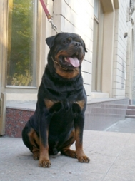

<table border="0" class="layout">
    <tbody>
        <tr>
            <td valign="top">
                <div class="holster">
                    <div class="block_container s3 b-text b-static-text user_css_12816005438" id="e_127779784960">
                        <p><em><strong>Каверина Алла</strong></em></p>
                        <p>тел.8 903-737-67-34</p>
                        <p><strong>Заходите к нам в <a href="http://www.arakks.ru/">гости</a></strong></p>
                    </div>
                    <div class="block_container s3 b-image txt-center" id="e_1282744329207"><span></span></div>
                </div>
            </td>
            <td>
                <div class="holster">
                    <div class="block_container s3 b-text b-static-text user_css_12816005438" id="e_12827442744">
                        <p style="text-align: center;"><span style="color: #006600;"><span style="color: #0000ff;"><strong>Ротвейлер</strong></span></span></p>
                        <p style="text-align: justify;"><span style="color: #006600;"><span style="color: #0000ff;"><strong>Из истории породы:</strong> после ухода римских легионов, их крупные, похожие на мастифов собаки остались в Южной Европе и приобрели славу отличных охотников на кабанов. В средние века в немецком городе Роттвайле эти псы были скрещены с местными овчарками и дали начало породе ротвейлер мецгерхунд, или ротвейлерской собаке мясника. Мясники использовали их как перегонщиков и сторожей стад, которые в то время передвигались только "пешком". Когда в 19 веке скот стали перевозить по железной дороге, численность ротвейлеров упала. Однако, к началу 20 веков породы была официально признана и в 30-е годы попала в Великобританию, США и Россию. Ротвейлер используется как сторож, полицейская, ездовая и розыскная собака. Они популярные участники выставочных рингов и хорошо выступают на состязаниях по дрессировке. </span></span></p>
                        <p style="text-align: justify;"><span style="color: #006600;"><span style="color: #0000ff;"><strong>Общая характеристика: </strong>ротвейлер - отличная служебная собака. Уравновешенная, решительная, отважная, подвижная, выносливая. Обладает большой силой и мощью. Спокойная, уверенная в себе, держится независимо и отчуждённо, недоверчива к посторонним. Собака умная, суровая, но управляемая. Может проявлять агрессию по отношению к другим собакам. Их следует воспитывать доброжелательно, но строго. </span></span></p>
                        <p style="text-align: justify;"><span style="color: #006600;"><span style="color: #0000ff;"><strong>Содержание и уход Ротвелер<span>а </span>:</strong> эти собаки должны много гулять и бегать вволю. Уход несложный - ежедневная чистка щёткой поддержит шерсть собаки в хорошем состоянии.</span></span></p>
                        <p style="text-align: justify;"><span style="color: #006600;"><span style="color: #0000ff;"><strong>Размеры:</strong> рост 63-69 см (кобели), 58-63 см (суки).</span></span></p>
                        <p style="text-align: justify;"><span style="color: #006600;"><span style="color: #0000ff;">__________________________________________</span></span></p>
                    </div>
                </div>
            </td>
        </tr>
    </tbody>
</table>​
